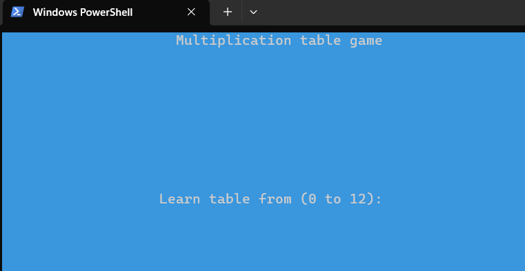

Hello!
Hello!Voici un résumé de ce que j'ai appris jusque là pendant ces 3 (4?) années à l'IUT de Lannion.
Même si ces dernières années étaient pas optimales, j'en serais quand même sorti plus intelligent.
- Réaliser un développement d'application
- Optimiser des applications informatiques
- Administrer des systèmes informatiques communicants complexes
- Gérer les données de l'information
- Conduire un projet
- Travailler dans une équipe informatique
Réaliser un développement d'application
Mon premier programme est une application programmé en Python et Powershell, destiné aux élèves en école primaire pour apprendre les tables de multiplication. Même si l'interface utilisateur est restreinte a un terminal, j'en reste tout de même fier pour mon entrée dans le domaine du développement d'application.
L'application est disponible sur mon GitHub et nécessite Python 3.3 minimum. Elle ne fonctionne que sur Windows dû a des dépendances pour l'affichage qui ne fonctionnent pas sur Linux. Cependant, je compte y revenir un jour afin d'y intégrer des équivalents Linux.
Optimiser des applications informatiques
Ma mission d'alternance est de migrer une application de facturation faite en Java et utilisée en interne. Ce processus consiste en plusieurs étapes, notamment:
- Migration de version de Java
- Analyse et optimisation du code existant
- Effacement du "code mort" (code inutile)
Plus d'informations lors de ma soutenance qui aura lieu fin Aout.
Travailler dans une équipe informatique
Lors de la 2eme année de BUT, avec une équipe de 8, nous avons travaillé sur un espace de vente en ligne similaire à Amazon afin d'y mettre différents produits mis en place par différents vendeurs.
Conception d'un dashboard (vue) admin, vendeur, client. Réalisation d'un dictionnaire de données, schéma relationnel...
A ce jour, le site reste accessible en ligne. Vous pouvez y accéder en cliquant sur l'image ci-dessous:
Langues
- Software : Java, C, Python
- Web : HTML, CSS, php, JavaScript
- Windows : cmd (.bat), Powershell
- Linux : bash, C niveau machine